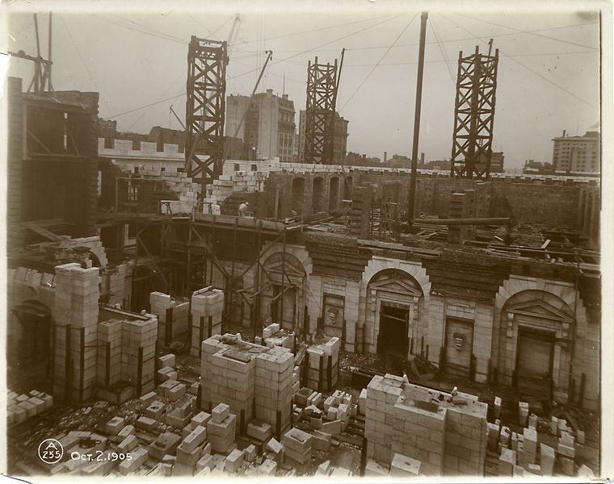

Fifth Avenue is one of the world's famous streets. What Regent and Bond Streets are to London, the Rue de la Paix to Paris, the Unter den Linden to Berlin, the Ringstrasse to Vienna, Fifth Avenue is to New York. It is the most aesthetic expression of the material side of the metropolis. A noted English author has characterized it as "architec- turally the finest street in the world." Its general aspect is one of great beauty, but its details present surprising contrasts and a few ugly extremes. Long famous for the beauty of its residences, churches and hotels, it is now rapidly becoming a great business street of pala- tial shops. Close inspection shows that it has a manufacturing centre and also a tenement quarter. Few, even of its residents, know the Avenue in all its phases.
It is difficult to imagine the contrasts which may be drawn along the avenue. At one end is venerable Washington Square, the beautiful Washington Arch, and the dignified homes of some of New York's oldest families. At the other end, 143rd Street and the Harlem River, is a quasi-public dump littered with unsightly debris. Within the seven miles that lie between, may be found some of the most beautiful homes in the world and unkempt double-decker tenements; building after building given to the manufacture of wearing apparel, or con- taining the headquarters or agencies of almost every known industry; luxurious and expensive hotels, and some of the most beautiful churches and clubs in this country. Elbowing the churches and the clubs, and pushing up to the very doors of the stately residences, are some of the finest shops and art galleries in the world.
This Avenue, the centre of fashion, wealth, society and trade — where many of the leading business men of America make their home, and the mart which attracts the most expensive products of America, Europe, Asia and Africa — changes so rapidly that after an absence of twenty-five years a former resident would hardly recognize it. To realize what changes have taken place let us fix in our minds the general aspect of the Avenue as it now is, sketch its rural aspect a century ago, and then traverse it leisurely, stopping here and there to catch a glimpse of its interesting past.
The earliest residential part of Fifth Avenue, below 12th Street, is to-day much as it was between 1830 and 1840, when the square, homelike, brownstone and brick houses — the first Fifth Avenue resi- dences — were built. Trade has left this section untouched, because the descendants of the old families, some of whom still live in this locality, have refused to sell; but it has laid an iconoclastic hand upon the rest of the Avenue below 59th Street. Between 12th and 23rd Streets the wholesale trade and makers of wearing apparel are en- trenched; no less than 491 garment factories, employing 51,476 hands, were estimated to be on Fifth Avenue in April 1915.
The Avenue from 23rd to 34th Streets is mainly devoted to retail specialty shops; while from 34th to 59th Streets, department stores and exclusive shops now predominate, having either swept away or flowed around churches, clubs, hotels and residences. Jewelry shops rivalling those of the famous Rue de la Paix; art galleries which exhibit wonderful collections of world-famous pictures by old and modern masters; antique and furniture shops, department stores and other establishments wherein may be found products of the greatest ancient and modern artisans make this part of Fifth Avenue one of the most magnificent streets in the world.
From 60th to 90th Streets is the line of beautiful residences popularly known as "Millionaires' Row." This mile and a half of Avenue — probably the most valuable residential section on the globe — has a total assessed valuation of $71,319,000. Protected here on one side by Central Park, the Avenue seems to offer effectual resistance to business.
Onward from Carnegie Hill, at 91st Street, the Avenue rapidly degenerates into a tenement section with many open lots, fenced with billboards, and with saloons and refreshment stands on some of the corners. Beyond Mount Morris Park (120th to 124th Streets) for several blocks it rises to the dignity of small brownstone or brick dwell- ings, but quickly drops to the tenement level again. From 127th to 139th Streets it swarms with foreigners and negroes. Beyond, the Avenue loses its identity in a rutted dirt road bordered by unsightly open lots, until, at 143rd Street, it comes to a degenerate end in the slimy waters of the Harlem River.
We need turn back the hands of time less than a hundred years to find almost virgin country where this wonderful Avenue now extends. Prior to 1824 Fifth Avenue had no existence save upon the Commissioners' Map of 1811. During the first quarter of the nineteenth Rural century the hne which Fifth Avenue follows to-day wandered over Aspect One "the hills and valleys, dales and fields" of a picturesque countryside, Hundred where trout, mink, otter and muskrat swam in the brooks and pools; Years ago brant, black duck and yellow leg splashed in the marshes; the fox, rabbit, woodcock and partridge found covert in the thickets covering the rough, rocky hills which characterized the upper part of New York. A few scattered farms lay about, while the City proper, with a population of less than 100,000, was still below Canal Street.
From Fifth Avenue